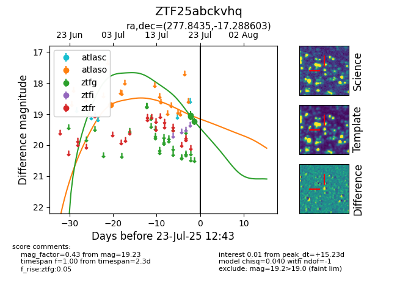

Target ZTF25abckvhq at 2025-07-23 11:52, see:
FINK: fink-portal.org/ZTF25abckvhq
Lasair: lasair-ztf.lsst.ac.uk/objects/ZTF25abckvhq
ALeRCE: alerce.online/object/ZTF25abckvhq
alt names
ZTF25abckvhq (ztf,fink)
coordinates:
equatorial (ra, dec) = (277.8435,-17.28860)
galactic (l, b) = (15.2864,-3.50942)
photometry
last ztfg=19.23
3 ztfg detections
